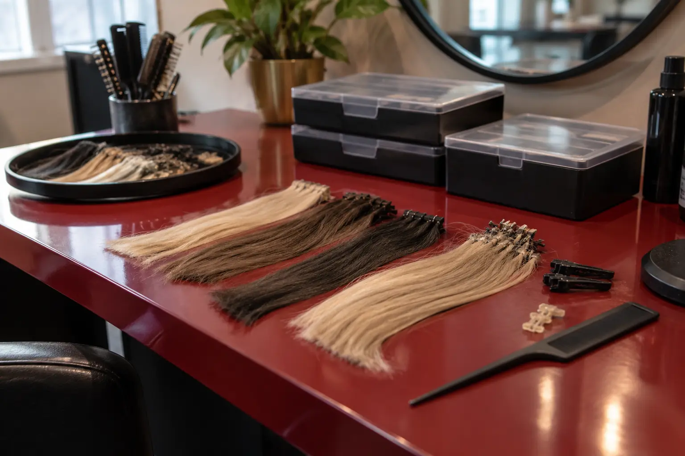

Priaugintų plaukų korekcija ir nuėmimas: atskiros darbų apimtys
Autorius: Madbeauty redakcija · Numatyta 2026 m. gruodžio 10 d. 10:00 (Lietuvos laiku)
Korekcija tęsia priauginimą, o nuėmimas jį užbaigia. Palyginkite 40 lipdukų juostelinės sistemos kainyno pavyzdį ir įtraukiamus darbus.

Korekcija skirta tęsti esamą priauginimą, o nuėmimas jį užbaigia. Tačiau pavadinimas pats nepasako, ar korekcija apima tvirtinimų nuėmimą ir pakartotinį uždėjimą, ar į kainą įtraukti plovimas, sušukavimas ir kiti darbai. Lyginkite konkrečią darbų apimtį, tvirtinimo sistemą ir jos būklę.
Korekcija ir nuėmimas sprendžia skirtingas užduotis
Korekcijos tikslas – tęsti priauginimo nešiojimą, atliekant konkrečius darbus su esamais tvirtinimais. Viename pasiūlyme tai gali reikšti tvirtinimų nuėmimą ir pakartotinį uždėjimą, kitame – kitokią apimtį. Nuėmimo tikslas – užbaigti dabartinį priauginimą; tai savaime nereiškia, kad įtrauktas plovimas, sušukavimas ar naujas priauginimas.
Tvirtinimo sistema lemia, kaip aprašomas nuėmimas
Skirtingos tvirtinimo sistemos nėra sukeičiamų darbų pavadinimai. Pavyzdžiui, „Great Lengths“ aprašo savo iš anksto paruoštas keratinines jungtis ir lipnias juosteles kaip skirtingus tvirtinimo būdus. Tai konkretaus gamintojo sistemų pavyzdys, o ne visų priauginimų apibrėžimas. „Great Lengths“ tvirtinimo metodų aprašas.
Šio gamintojo instrukcijoje keratininių jungčių ir juostelių nuėmimui nurodomos skirtingos profesionalios priemonės; gamintojas savo sistemoms reikalauja apmokyto specialisto. Tai konkretaus gamintojo instrukcija, o ne Lietuvos profesijų teisinio reguliavimo aprašas. „Great Lengths“ klausimai apie sistemų nuėmimą.
Kainyno pavyzdys: 40 juostelių lipdukų
2026-10-10 peržiūrėtame Gatineau kainyne, kurio dokumento pavadinime nurodyta 2026-01-07, juostelių priauginimo korekcija skaičiuojama po 3,50 € už lipduką: nurodytas vieno lipduko nuėmimas ir uždėjimas. Vien tik nuėmimas kainyne nurodytas po 0,80 € už lipduką; plovimas ir sušukavimas po nuėmimo – 20 € atskirai. Kainyne pažymima, kad kaina priklauso nuo plaukų būklės. Peržiūrėkite Gatineau kainyno pavyzdį.
- 40 lipdukų korekcija: 40 × 3,50 € = 140 €.
- 40 lipdukų nuėmimas: 40 × 0,80 € = 32 €; plovimas ir sušukavimas kainyne nurodyti atskirai – 20 €.
Taigi, jei abiem atvejais kalbama apie tuos pačius 40 lipdukų, pavyzdyje korekcija sudarytų 140 €, o nuėmimas su atskirai nurodytu plovimu ir sušukavimu – 32 € + 20 € = 52 €. Tai aritmetinis konkretaus kainyno palyginimas, ne garantuota galutinė kaina: darbų poreikį ir kainą gali keisti būklė, o kiti darbai gali būti nurodyti atskirai. Šiame kainyno įraše korekcijos trukmė nenurodyta.
Kito peržiūrėto meniu, „The Head Room“, juostelėmis priaugintų plaukų korekcija nurodyta kaip 80 € ir 1 val. 50 min., o priaugintų plaukų nuėmimas – 50 € ir 1 val. Meniu neįvardija, kokiu metodu nuimama šiame pasiūlyme, todėl šių eilučių negalima laikyti to paties nuėmimo protokolo kainomis. „The Head Room“ paslaugų meniu.
Ką sutikrinti prieš lyginant pasiūlymus
Kad palygintumėte vienodą darbų apimtį, pasižymėkite šiuos dalykus:
- Kokia tvirtinimo sistema naudojama ir kiek tvirtinimų bus tvarkoma arba nuimama.
- Ar korekcija apima nuėmimą ir pakartotinį uždėjimą, ar kuri nors dalis kainuoja atskirai.
- Ar į kainą įtraukti papildomi plaukai, priemonės, plovimas ir sušukavimas.
- Jei siūloma pakartotinai naudoti priaugintas sruogas, kokios jų būklės reikia ir ar paruošimas įskaičiuotas. Ar nurodyta suma priklauso nuo tvirtinimų skaičiaus ir jų būklės.
Pakartotinio naudojimo nelaikykite savaime suprantama korekcijos ar nuėmimo dalimi. Tai, kas įtraukiama į pasiūlymą, turi būti nurodyta konkrečiai. Pavyzdžiui, Gatineau kainyno eilutės aprašo darbą su lipdukais ir atskirą plovimo bei sušukavimo kainą; vien iš žodžio „korekcija“ negalima spręsti apie papildomų sruogų ar kitų priemonių kainą.
Priežiūra ir įtampos požymiai
Amerikos dermatologų akademija įspėja, kad ilgalaikę trauką sukeliantys stiliai, įskaitant priauginimą, gali prisidėti prie traukos sukeliamo plaukų slinkimo. Tai bendro pobūdžio informacija, o ne individualus plaukų ar galvos odos būklės įvertinimas. AAD informacija apie plaukus tempiančius stilius AAD taip pat aptaria mechaninės traukos ir karščio poveikį plaukams bei tai, kad priežiūros rekomendacijos priklauso nuo plaukų tekstūros. AAD informacija apie formavimą ir plaukų pažeidimą Po nuėmimo ar korekcijos vadovaukitės konkrečios sistemos ir paslaugos teikėjo pateiktomis instrukcijomis; čia neteikiamas naminio nuėmimo receptas ar universalus korekcijų intervalas.
Gatineau ir „The Head Room“ kainos yra atskirų meniu pavyzdžiai, ne Madbeauty teikėjų pasiūlymai ar Lietuvos kainų vidurkis. Galutinę darbų apimtį ir kainą reikia vertinti pagal naudojamą sistemą, tvirtinimų skaičių ir būklę.
Procedūrų aprašai kataloge: Priauginimo korekcija, Priaugintų plaukų nuėmimas. Miestą ir realaus teikėjo pasiūlymą pasirinkite kataloge, kai tokia pasiūla pateikta.
Susiję gidai
Šaltiniai
- AAD · plaukus tempiantys stiliai · www.aad.org
- AAD · formavimas ir plaukų pažeidimas · www.aad.org
- Great Lengths: tvirtinimo sistemų skirtumas · www.greatlengths.com
- Great Lengths: profesionalus sistemų nuėmimas · www.greatlengths.com
- Gatineau: 2026 plaukų priauginimo ir korekcijos kainynas · www.groziopaslaugos.lt
- The Head Room: juostelinio priauginimo meniu · theheadroom.lt